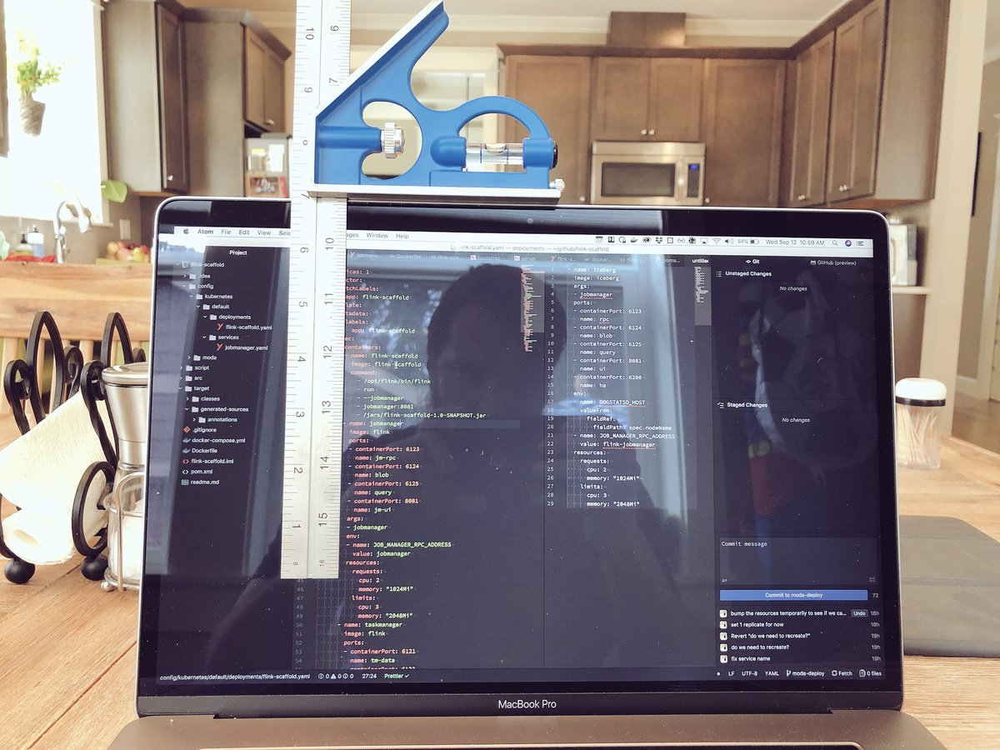

Configuration as Code - Is It That Good of an Idea?
Kyle’s Conclusions:
- If possible, make your users not care about the intermediate form
- “Code as Configuration” is not worth it
- YAML isn’t so bad if you can be strict
A Brief History of Configuration as Code
Configuration as Code is not new. There are a few subtle distinctions that are worth pointing out:
| Thing | Historic Example | Modern Example |
|---|---|---|
| Config as Config | Apache2 (.conf) | Sensu (.json) |
| Config as Code | Sendmail (.cf) | Skycfg (.cfg) |
| Code as Config | C (config.h) | Aurora (.aurora) |
- Config as Config: Config files which is never “run”, but is interpreted as-is by the consuming program.
- Config as Code: Config files which are executed in way, which output an intermediate config language, which is then consumed by the program.
- Code as Config: Config files which are executed directly by the program. There is no intermediate representation, it just is code.
This blog post is about the last two.
An Example Case Study: Nagios Versus Sensu
Nagios is a monitoring tool built in 2002. Sensu is also a monitoring tool, built around 2011. There are plenty of differences, but for this case study I’m going to focus on how these tools are configured by their users.
Nagios’s configuration file format is bespoke, but you can use the nagios
binary to verify its correctness. It has a everything from low-level resource
definitions
to object templating and
inheritance
as well as macros and variable
expressions.
Its configuration language is designed to be currated by humans. This hasn’t
stopped engineers from writing parsers ([1],
[2],
[3]) so they can
write Nagios config as code.
Sensu’s configuration file format is JSON. It has very limited variable expression. Its configuration language is designed to be deployed with machines (configuration management tools). The Sensu JSON files were never intended to be written by humans. It was always intended to be a “configuration-management-native” system.
To put it another way, the original Sensu authors wanted the JSON to be an “intermediate form” (where the human readable form was the users’ choice (chef code), then deployed to JSON for sensu to read, eventually ending up as internal Sensu (ruby) objects).
Why? Why would the Sensu authors make their system use configuration format that is hostile to humans (JSON)? I think they were building it this way for two reasons:
-
They were building this tool for the long haul. Humans will be editing their monitoring config (Sensu or Nagios) for years, so they wanted to meet them where they are at, and make it as easy as possible for their users to use the common language of their environment (configuration management tools).
-
As a reaction to the “complexity” of the nagios configuration model, the authors wanted to leave room for programmatic and dynamic configuration. In the modern error, hosts come and go at will, checks need to be redefined based on other programmatic events, and in general the world is not a static set of hosts and checks per the Nagios model. Configuration as Code is one way to make room for this dynamic.
DSLs or Making Your Users Not Care
DSLs are a mixed bag. Evaluating a DSL for its usefulness comes down to one key thing:
How much intellectual effort does this DSL save me, compared to the intellectual cost of understanding and working with the intermediate form directly?
Upon initial inspection, DSLs can look like they provide no immediate benefits, and instead look like they just add a layer of obfuscation:
# Native Sensu | # Puppet Sensu
{ | sensu_check { 'check_www':
"check_www": { | command => 'check_http --port 80',
"command": "check_http --port 80", | interval => 60,
"interval": 60 | }
} |
} |
It is naive to think that all this is is some alternative way to make JSON. The real power comes from building abstractions on top, and allowing it to live in the surrounding ecosystem of configuration:
$port = 80
class { 'apache':
listen_port => $port
} ->
sensu_check { 'check_apache':
command => "check_http --port $port",
interval => 60,
}
This kind of integration was never possible with Nagios’s configuration language, even with all its templates, inheritance, and variable interpolation.
But for these users of Sensu, they never hand-made the JSON in the first place. To them, the configuration management language they use is the config language they use, they don’t care about the JSON intermediate form (for all they care, it doesn’t even exist and is an implementation detail).
What About k8s DSLs?
Kubernetes’ (k8s) popularity, combined with it’s “almost human readable api” format (when you look at it in YAML form), have created a cottage industry of tools built to deal with k8s’s “intermediate form YAML”.
There is a subtle difference though between all these tools and the Sensu example above: people care about the intermediate form with k8s. For k8s, the YAML is the k8s configuration language, so any tool that “compiles” to k8s YAML must have the ability to allow users to inspect that intermediate form.
For some reason (probably the fact that YAML is human readable and the kubectl apply command exists), we see it as the “primary” form, and not the
intermediate. We don’t see the same sort of standard held against Terraform.
Nobody really cares about the intermediate JSON that flows between Terraform
and cloud APIs, to Terraform users, the Terraform DSL is what matters.
YAML: A Beast That Can Be Tamed
The question to me is:
Is YAML the input format or is YAML the output format?
I think YAML is a fine input format for humans for DSLs and such. I think it does not need to be an output format for computers to read, and gives a false impression that humans should be meeting computers where they are at.
When YAML is used as an input format only, then humans can decide what the inputs are, not the machines. When the YAML generated by humans is intended to be used directly by an API (k8s in these examples), then there will be an impedance mismatch.
I see a couple of paths for infrastructure developers to potentially take:
- Say “no” to layers of obfuscation and “climb mount YAML”.
- Decide that the amount of YAML is too much for a human to handle, and resort to a “real” programming language to generate it (“Code as Configuration”).
- Take a hybrid approach and template out the YAML (the “Helm” approach).
- Make a DSL that can take in your format of choice, and output to an intermediate form, and make your users not care what that is (the “Sensu approach” in the example above).
For the record, I’m in favor of approach #4.
Is It “Code as Configuration” Worth It?
Some of the industry is pushing things in favor of approach #2. It usually starts with a look at how much duplication there is in the YAML files, and the urge to DRY out the configs takes hold. Although YAML does have built-in functions to help reduce some duplication, they only operate on hashes.
When that is not enough, someone usually says “why don’t we just us Python?” Well, you certainly can! At this point you are getting into “Code as Configuration” territory. Although I don’t think this is a good idea, if you think this is a good idea, then you might like some of these:
- Dhall: Haskell-inspired general purpose language for outputting config.
- Pulumi: “Just Python” library for building cloud resources with Terraform-esq declarative semantics.
- Skycfg: k8s-specific python library that outputs YAML for k8s consumption.
- Ksonnet: A k8s-specific way of templating/patching k8s manifests
- Cue: General-purpose config language, superset of JSON for
Some day I’ll do a comprehensive blog post comparing all these tools.
Why do these tools exist? My best guess is:
- The allure of DRY is very strong, and often we’ll trade extra complexity for the chance to not repeat themselves
- The tool expecting all this config was never intended for humans to provide the input
- The problem domain really is too complex to define with static configuration
When the problem domain hits that level of complexity, then the answer is not config generation, the answer is a new level of abstraction and automation. When you live in a dynamic environment when hosts come and go, do not write a nagios hosts configuration generator and turn a static tool into a dynamic one.
Code As Config: It Make Building Seams Harder
Infrastructure changes, and the true “data gravity” is in configuration.
Having configuration in declarative config formats allows change, validation, and linting. It allows infrastructure developers to easily build “seams” around that configuration, adding new features, refactoring old ones, and upgrading configuration en-masse, without having to “refactor” a codebase.
Which of these DAG configurations do you think would be easier to transition to a new platform?
name: my-dag-1
default_task_args:
start_date: '2018-10-01'
operators:
- name: print-hello
type: bash
properties:
bash_command: "echo hello"
- name: print-world
type: bash
upstream_dependencies:
- print-hello
properties:
bash_command: "echo world"
Or
import os
from airflow import DAG
import datetime
from airflow.operators.bash_operator import BashOperator
DEFAULT_TASK_ARGS = {
'start_date': '2018-10-01',
}
dag = DAG(
dag_id = 'my_dag_1',
default_args = DEFAULT_TASK_ARGS,
)
print_hello = BashOperator(
dag = (dag),
bash_command = 'echo hello',
start_date = (datetime.datetime(2018, 10, 1, 0, 0)),
task_id = 'print_hello',
)
print_world = BashOperator(
dag = (dag),
bash_command = 'echo world',
start_date = (datetime.datetime(2018, 10, 1, 0, 0)),
task_id = 'print_world',
)
print_world.set_upstream(print_hello)
See Ety’s boundary-layer and blog post for an example where it was worth it to them to define jobs in a declarative YAML format, instead of allowing developers to “just write python”.
YAML: Be Strict In What You Accept
YAML is a very flexible input language for humans, but in my opinion, too flexible. There are:
- Many different ways to do multiline strings
- 22 ways to represent a boolean
- A timestamp format (at least it is inspired by ISO8601)
I’ve seen mistakes with the above in production many times. Want more, check out some other weird YAML gotchas.
After spending years of working with YAML, I’ve come to accept the good with the bad, BY NOT ALLOWING IN THE BAD.
My best advice is to look at pre-commit, yamllint, and strictyaml.
Just like any other flexible language, your organization will save time and avoid mistakes with a machine-enforced style guide.
Conclusion
You can come to your own conclusions, but I’ll tell you what I’ll continue to do for the users around me:
- I’m going to protect them from YAML gotchas, while making it a pleasure to write the minimum amount of configuration they need to address their problem domain
- I’m going to build tools that protect users from the intermediate form, and make it so they don’t care (a true abstraction)
- I’m going to advocate against config-as-code or code-as-config, as I believe it adds a new dimension of complexity where it is rarely needed. The best code is no code.